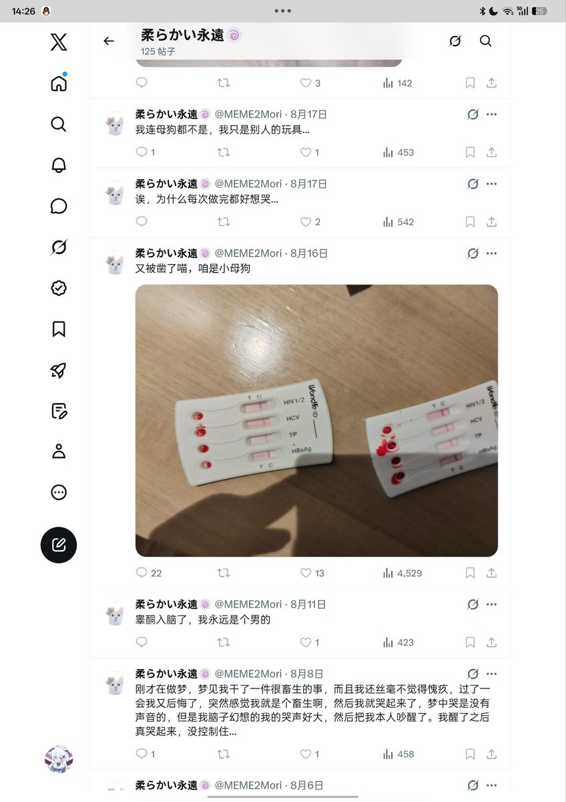

我的天哪，你一个圆角自恨跨，还评判上我了吗？
你算什么东西，能不能先掂量掂量自己做过什么再来评价我啊。我说傲慢一点，你这种从事不合法工作还恬不知耻的自恨跨连给我评论都不配。自己搁那圆角给皮燕子都整烂了然后觉得我玩玩具不好好洗犯恶心。大姐你自己想想你适合这样说我吗？
那么是谁更恶心呢？好难猜啊。说句实话我本来都不是很想发这条帖子的，等会没准还有人说我在挂人，你就是一条区罢了，但也是真的恶心到我了，特此关照。
尊重和平等建立在对方也愿意遵守这点的前提下，你不遵守了那我也没必要一厢情愿了。我就是对你进行一个歧视，我就是觉得你一个规模评级只有C级的没资格和我S级下说话，你这个以下犯上还恬不知耻、自视清高的东西。
你算什么东西，能不能先掂量掂量自己做过什么再来评价我啊。我说傲慢一点，你这种从事不合法工作还恬不知耻的自恨跨连给我评论都不配。自己搁那圆角给皮燕子都整烂了然后觉得我玩玩具不好好洗犯恶心。大姐你自己想想你适合这样说我吗？
那么是谁更恶心呢？好难猜啊。说句实话我本来都不是很想发这条帖子的，等会没准还有人说我在挂人，你就是一条区罢了，但也是真的恶心到我了，特此关照。
尊重和平等建立在对方也愿意遵守这点的前提下，你不遵守了那我也没必要一厢情愿了。我就是对你进行一个歧视，我就是觉得你一个规模评级只有C级的没资格和我S级下说话，你这个以下犯上还恬不知耻、自视清高的东西。
